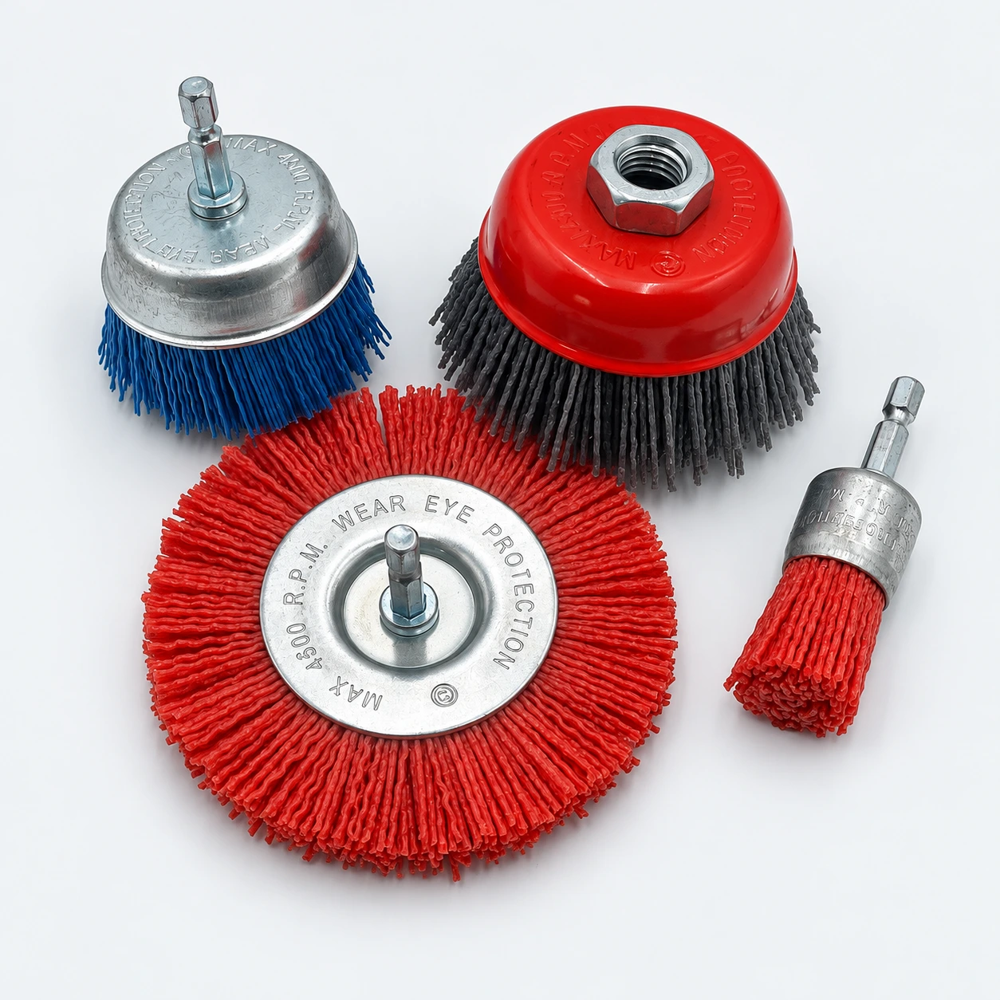

Abrasive Filament Brush Manufacturer for Wholesale Supply
YEKAI supplies abrasive filament brushes in wheel, cup and shank-mounted formats for industrial tool importers and wholesalers. Share your workpiece material, required finish and tool specification to discuss a suitable brush and sample evaluation.
Discuss your requirements on WhatsApp ↗
Abrasive Filament Brush Specifications
Wheel, Cup and Shank-Mounted Formats
Choose the brush profile around the working surface and available clearance. Our catalog shows wheel brushes, threaded cup brushes and shank-mounted designs.
Grit, Filament and Mounting Options
Confirm brush diameter, working width, filament specification, grit and mounting connection. Available combinations depend on the model; specify these details together when requesting a quotation.
Abrasive Brushes for Surface Finishing
Cleaning and Deburring Applications
Discuss light deburring, cleaning or finishing requirements with the workpiece material and surface condition. A sample trial helps establish whether the selected brush produces the required result.
Matching the Brush to the Desired Finish
Share the initial surface condition and the target finish. Brush format, abrasive grit and operating conditions all influence the result; compare samples before approving bulk supply.
OEM Abrasive Brush Orders
Custom Specifications and Sample Approval
Send dimensions, drawings or a reference sample for review. Confirm technical feasibility, sample requirements and the agreed specification before production.
Branding and Packaging
Discuss private label artwork, packaging language and presentation for your sales channel. Confirm the pack format and labeling requirements with your chosen brush.
Wholesale Supply from YEKAI
Factory Communication for B2B Buyers
Contact our Yongkang team directly to discuss product selection and repeat-order requirements. Keep approved specifications and packaging details consistent across quotations and orders.
Quantity, Pricing and Dispatch Planning
Send the required quantities by model and grit. Ask for sample availability, production lead time and dispatch arrangements; schedules are confirmed for each order.
Request a Wholesale Quote
Discuss your abrasive filament brush requirements with Frank. Send the brush format, dimensions, grit, quantity and destination to receive a tailored wholesale quotation.
Contact Frank on WhatsApp ↗